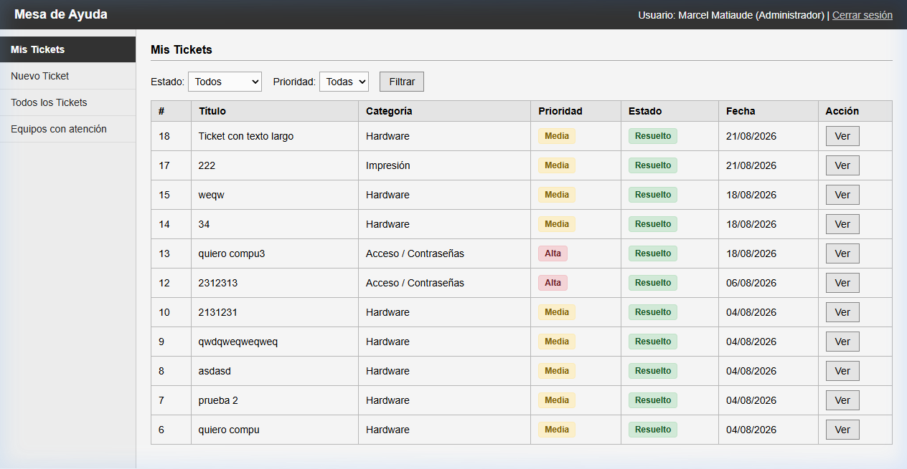

Formulario intuitivo y rápido para que cualquier usuario reporte incidencias en segundos.
El usuario visualiza únicamente sus tickets creados con estado actualizado en tiempo real (Pendiente, En Proceso, Resuelto), sin llamadas ni papeles.
Herramientas especializadas para el trabajo diario de los técnicos de soporte informático.

Transición formal del incidente: Pendiente → En Proceso → Resuelto con registro de solución.
"Impresora de Dirección no responde en red"
Asignado a: Sin técnico asignado | Equipo: IMP-KYOCERA-09